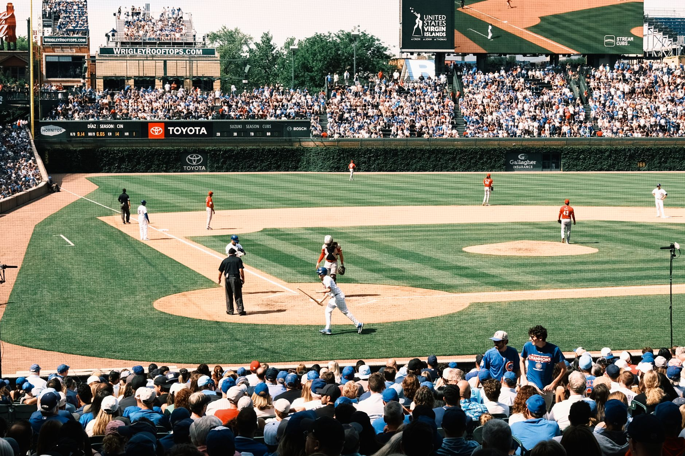

A dramatic late game turnaround
In a game that seemed all but decided, the Arizona Diamondbacks proved why you can never count them out until the final out is recorded. Entering the late innings, the Chicago Cubs held a commanding lead that looked insurmountable for the Arizona dugout. The atmosphere in the stadium shifted from anticipation to disbelief as the Cubs' pitching staff appeared to be in total control of the matchup.
However, baseball is a game of momentum, and the Diamondbacks began to chip away at the Cubs' lead. What started as a quiet inning quickly turned into a chaotic offensive explosion that left the Chicago defense scrambling. The comeback was not just about the runs scored, but the sheer willpower shown by the Arizona lineup to fight back from the brink of defeat.
The surge of the diamondbacks offense
The comeback began with a series of disciplined plate appearances and timely hitting. The Diamondbacks' ability to put the ball in play and force defensive errors allowed them to build the necessary pressure on the Cubs' bullpen. Instead of swinging wildly at pitches out of the zone, the Arizona hitters showed remarkable patience, driving up pitch counts and forcing the Chicago manager into difficult decisions.
As the runners began to populate the bases, the tension in the stadium reached a fever pitch. Every pitch felt heavy, and every movement on the field was scrutinized by fans eager to see if the Arizona magic would strike one more time. The momentum had clearly shifted, but they still needed one decisive blow to seal the victory.
Waldschmidt delivers the knockout blow
With the game on the line and the tension at its peak, manager Torey Lovullo made the tactical decision to call upon Ryan Waldschmidt. Stepping out of the dugout as a pinch-hitter is one of the most high-pressure roles in professional baseball. There is no rhythm to find and no warm-up period; it is simply a matter of performing when the lights are brightest.
He stepped into the box with the weight of the entire franchise on his shoulders and swung with the intent of a man who knew this was his moment.
Waldschmidt did not disappoint. Connecting with a pitch right in his sweet spot, he sent a towering blast into the seats. The walk-off home run sent the Diamondbacks dugout into a frenzy and left the Chicago Cubs in a state of shock. It was the definitive moment of the game, a highlight-reel finish that will be talked about for the remainder of the season.
Analyzing the cubs defensive struggle
While the Diamondbacks deserve immense credit for their resilience, the Chicago Cubs must also look inward at how they allowed such a significant lead to evaporate. The primary issue resided in the bullpen's inability to navigate the middle of the Diamondbacks' order. High pitch counts and walks allowed the Arizona hitters to see more of the Cubs' arsenal than they should have.
The Cubs' pitching staff struggled with command, often falling behind in counts and being forced to throw strikes in hitter-friendly zones. In a tight game, these small margins are the difference between a win and a heartbreaking loss. For the Cubs, this game serves as a vital lesson in the importance of finishing innings cleanly and maintaining composure under pressure.
What this means for the season standings
This victory provides a massive boost to the Diamondbacks' confidence as they navigate a grueling divisional schedule. Winning games in such dramatic fashion builds a team culture of belief, knowing that no deficit is too large to overcome. This kind of mental toughness is often what separates playoff contenders from the rest of the league.
For the Cubs, the loss is a setback that highlights the need for more consistency in their relief corps. As the season progresses, they will need to find ways to close out games more effectively to avoid similar collapses. Both teams will look to learn from this encounter as they prepare for their upcoming series.
Looking at recent power hitting performances
The league has seen an incredible influx of power hitting lately, with players stepping up in clutch moments across the board. Waldschmidt's performance is just one example of how a single swing can change the trajectory of a season. We are seeing more players than ever find their groove during high-leverage situations.
If you enjoyed reading about these explosive offensive displays, you should check out our previous coverage where Cal Raleigh Smashes Three Home Runs in Mariners Victory at https://dhyey.bond/blog/cal-raleigh-smashes-three-home-runs-in-mariners-victory/. Much like Waldschmidt, Raleigh has shown an uncanny ability to dominate the diamond when his team needs him most.
Stay tuned to Dhyey Bond for more breaking news, deep dives into player statistics, and comprehensive coverage of all your favorite baseball and basketball moments.
See Also
If you enjoyed this Baseball News article, check out Cal Raleigh Smashes Three Home Runs in Mariners Victory for more useful reading.